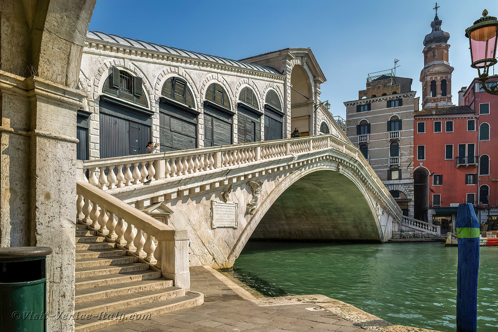
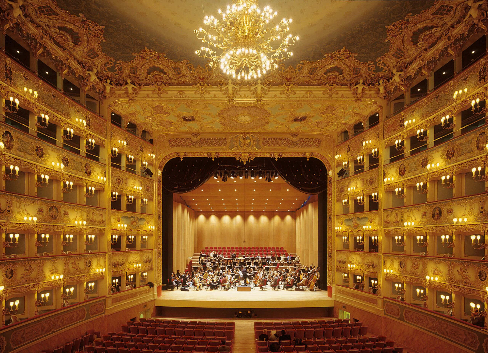
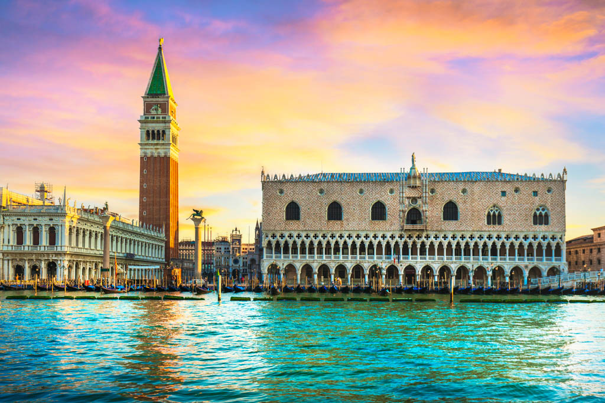
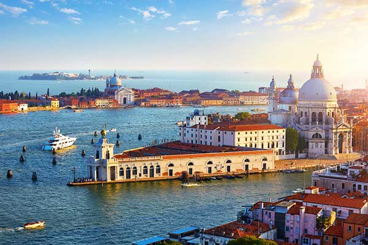
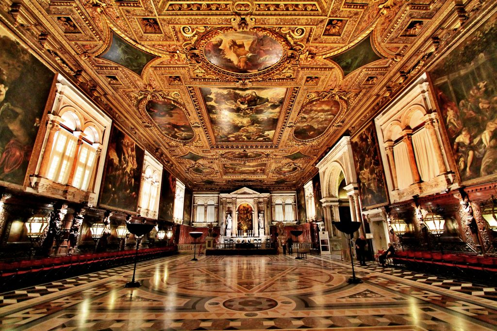

The Grand Canal – or Canal Grande – flows through the 6 districts of Venice. Many smaller canals eventually lead to this Grand Canal. This canal is beautiful to see from the shore, but a boat trip is even better to experience the Venice landmarks and sights from the water. You must have done this at least once in your life. About halfway along the Grand Canal is the famous Ponte di Rialto (Rialto Bridge). This covered pedestrian bridge has many shops where you can buy your souvenirs.
Things to do in Venice at night? You don't have to be a theater lover to appreciate the beautiful interior of this property. The velvet armchairs, the richly decorated balconies, the lighting and the amazing ceiling will make a visit to this theater even without a performance special. However, in the Feniks theater, various kinds of performances take place, such as Venetian opera and ballet, as well as concerts. If you wish, you can book this La Fenice tour or spend an evening in Teatro La Fenice and also gaze at all the colors and paintings during the intermission.
The Doge's Palace – also called Palazzo Ducale – was home to the Doge, the leader of the republic that Venice used to be. This palace in Gothic-style used to house political institutions. Now the Doge's Palace is a museum, where you can visit the rooms of the Doge. From the Doge's Palace a bridge crosses the canal: the Ponte dei Sospiri ('Bridge of Sighs'). This bridge was used by convicts who had heard their sentences to enter the prison on the other side of the canal.
Dorsoduro is the southernmost of the six Venetian neighborhoods and known for its culture and the students. During a walk you will come across several places of interest, such as the Peggy Guggenheim Collection, Punta della Dogana and Galleria dell'Accademia. To the east, Dorsoduro borders the Grand Canal. There are also several churches to visit, such as the Santa Maria del Rosario and the San Sebastiano. More tips for exploring Dorsoduro.
The Scuola Grande di San Rocco is an impressive 16th-century museum that displays works of art by Tintoretto, among others. In the former 'brotherhood' you will mainly find works from the Renaissance period. It is a small museum and because of the period on display here, the museum can be experienced as dark. Scenes on ceilings and walls are painted with dark colors, but very impressive in terms of the story they portray.
